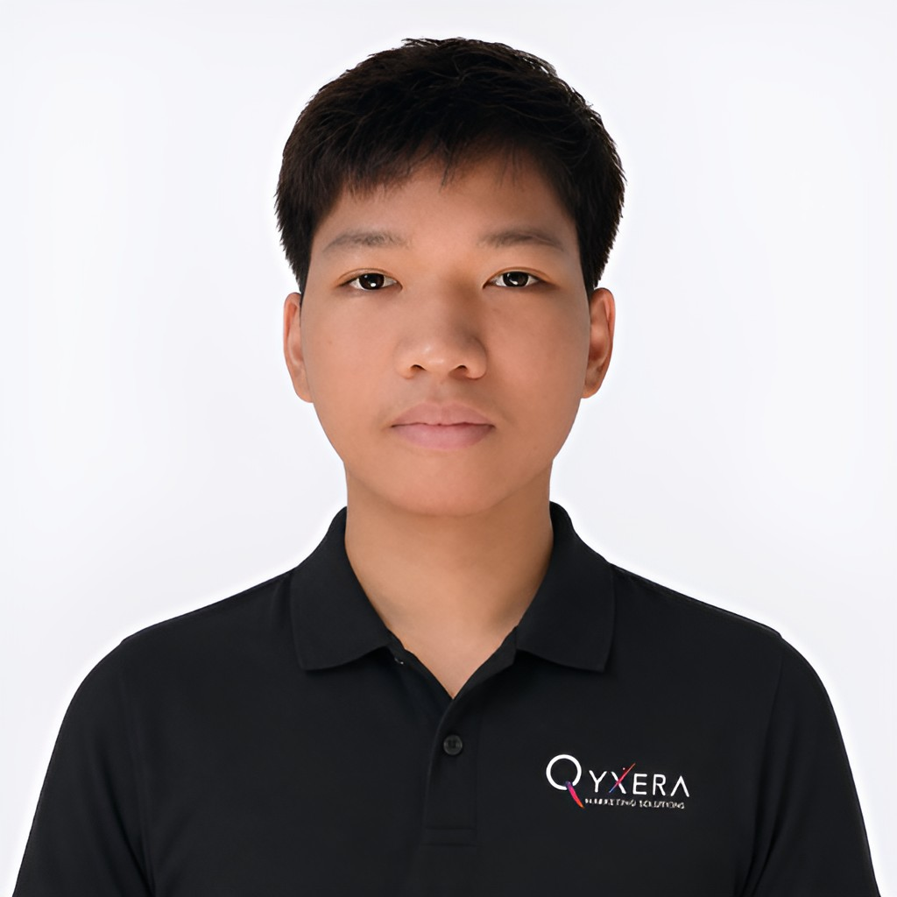
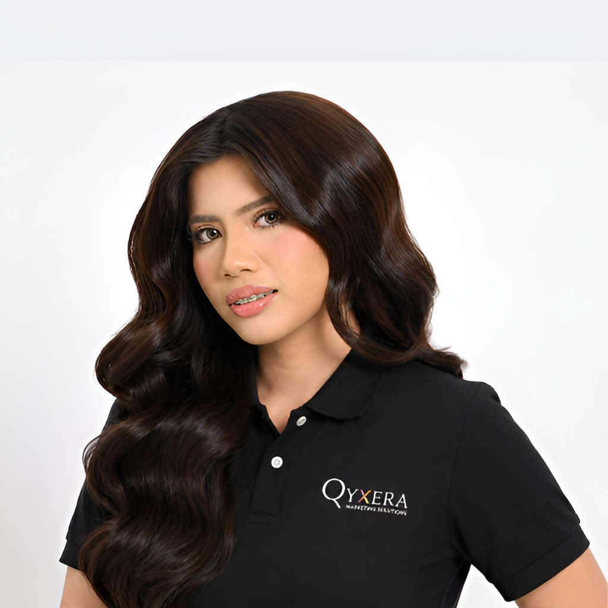
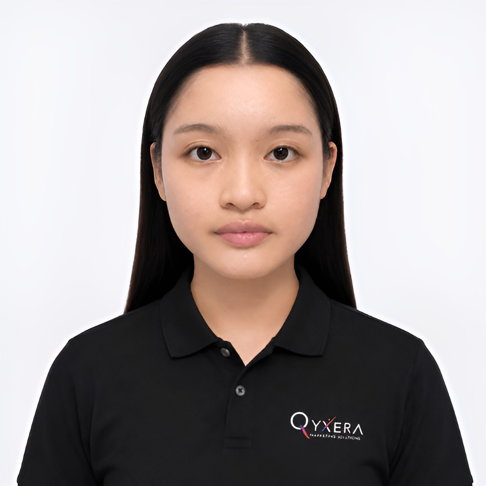

Founder
Wayne Ken Z. Bandong
Building QYXERA's vision through marketing, technology, AI, and connected systems designed to move businesses forward.
Strategy, creativity, growth, and technology come together through a hands-on team focused on turning ideas into measurable business progress.
Setting QYXERA's direction across marketing, technology, AI, and connected growth systems.
Building QYXERA's vision through marketing, technology, AI, and connected systems designed to move businesses forward.
Helping shape QYXERA's growth through strategic leadership, creative direction, and client-first execution.
Supporting QYXERA's direction and delivery with a focus on strong client relationships, creative quality, and operational growth.
Coordinates daily team operations, supports workflow efficiency, and helps ensure projects are delivered smoothly and on time.
Oversees daily operations, supports team coordination, and helps maintain efficient workflows across ongoing client projects.
Keeping day-to-day execution organized, supporting team coordination, and helping projects move smoothly across active client work.
Connecting creative and data to turn advertising budgets into measurable reach, leads, and campaign performance.
Plans, manages, and optimizes digital advertising campaigns with a focus on stronger lead generation and performance.
Turning ideas, campaigns, and brand direction into polished visual assets that communicate clearly and consistently.
Creates illustrations, campaign graphics, and branded visual assets that help QYXERA and its clients communicate with clarity and impact.
Connects directly with local businesses, builds relationships, and helps identify opportunities where QYXERA solutions can support measurable growth.
Supports prospect outreach, on-site coordination, and relationship building to connect client needs with the right QYXERA solutions.
Bringing QYXERA closer to local businesses through direct outreach, relationship building, market visibility, and real-world client engagement.
Builds modern web applications, AI-powered tools, and automation solutions for stronger digital experiences.

Develops reliable digital solutions and automation systems designed to simplify workflows and support growth.
Creates scalable web solutions and digital systems that turn business requirements into functional experiences.

Supports the development of websites, applications, and automated solutions that help businesses operate more efficiently.
Builds and supports digital solutions, web experiences, and automated workflows that help improve business processes and client delivery.
Building the websites, applications, automation, and digital systems that turn strategy into working technology.
Supporting QYXERA's day-to-day financial coordination and front desk operations while helping keep internal processes organized and responsive.

Supports accounting coordination, administrative workflows, and front desk responsibilities that help keep QYXERA's daily operations running smoothly.
Helps coordinate internal tasks, documentation, client requirements, and operational workflows so projects stay organized and on track.

Supports daily business operations and administrative coordination, helping the wider team stay focused on smooth client delivery and growth.
Supports day-to-day coordination, documentation, and internal operations to help projects and client work move efficiently.
Supporting the systems behind the work through coordination, documentation, administrative support, and the day-to-day details that keep QYXERA moving efficiently.
We keep strategy and execution close together so projects move with less friction and more accountability.
Creative, marketing, and technical work stay connected instead of operating in separate silos.
We stay close to the details, the tools, and the outcomes that matter to each project.
We move quickly, learn from performance, and adjust execution as business needs evolve.
Tell us what you're trying to grow, improve, or automate. We'll help you identify the right next move.
Social Media Manager
Turning strategy into an active brand presence through content planning, publishing, engagement, and audience development.
Kristen Carl Ona
Builds and manages social content that strengthens brand presence, engagement, and audience connection across digital channels.